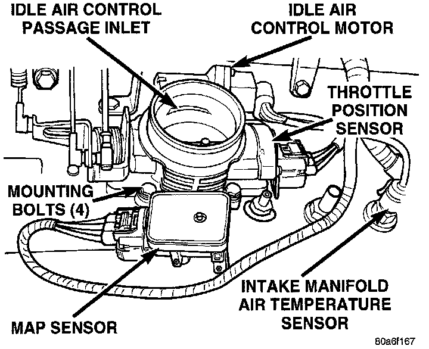

Air Temperature Sensor ( Ambient / Intake ): Description and Operation
INTAKE MANIFOLD AIR TEMPERATURE SENSOR-PCM INPUTFig. 9 Throttle Body & Sensors:

The intake manifold air temperature sensor is installed in the intake manifold with the sensor element extending into the air stream (Fig. 9). The sensor provides an input voltage to the Powertrain Control Module (PCM) indicating intake manifold air temperature. The input is used along with inputs from other sensors to determine injector pulse width. As the temperature of the air-fuel stream in the manifold varies, the sensor resistance changes. This results in a different input voltage to the PCM.
CIRCUIT OPERATION
The intake air temperature sensor provides an input to the Powertrain Control Module (PCM) on circuit K21. Circuit K21 connects to cavity A15 of the PCM.
From circuit K21, the intake air temperature sensor draws voltage from the PCM. The sensor is a variable resistor. As intake air temperature changes, the resistance in the sensor changes, causing a change in current draw.
The PCM provides a ground for the intake air temperature sensor signal (circuit K21) through circuit K4. Circuit K4 connects to cavity A4 of the PCM.